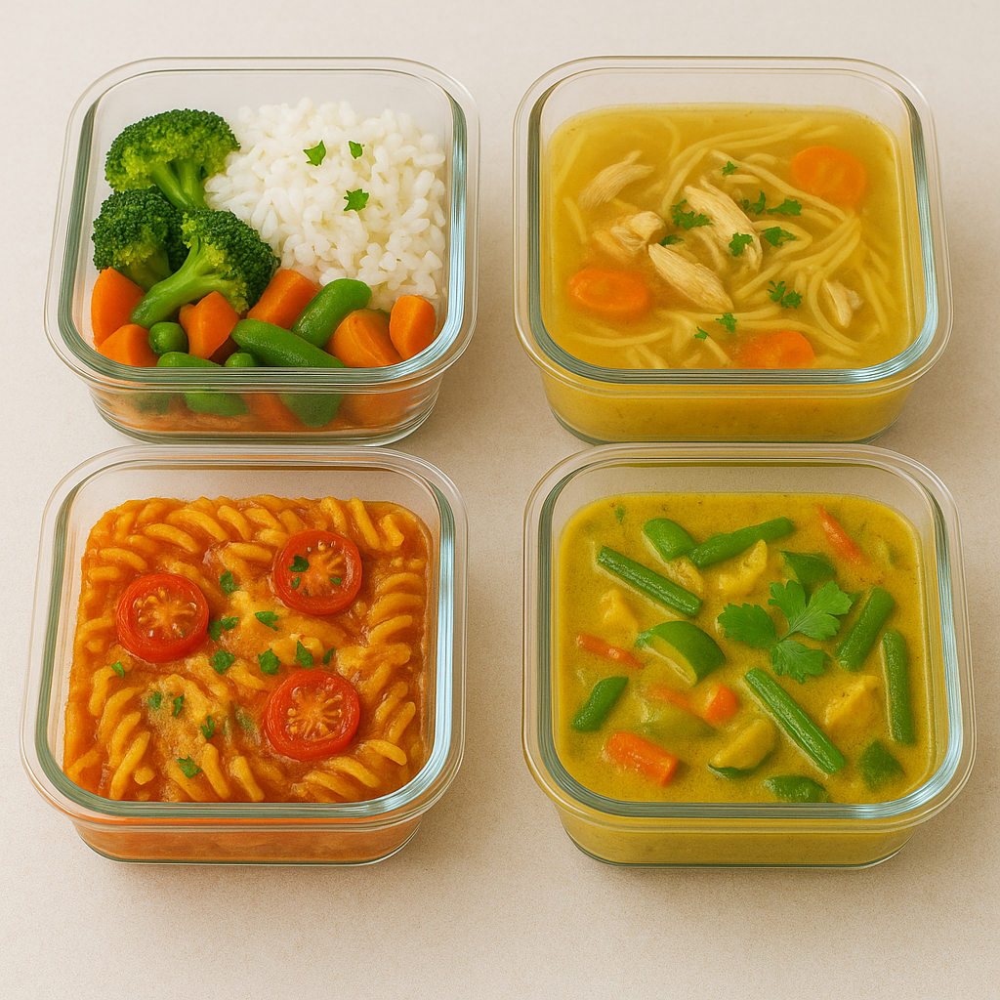

Ein einzigartiges Wohlfühlgericht, das die Würze eines Thai-Currys, die Herzhaftigkeit einer cremigen Hühnersuppe und die goldbraune Käsekruste eines Nudelauflaufs vereint. Zarte Hühnerstücke, bissfeste Nudeln und frisches Gemüse schwimmen in einer aromatisch-cremigen Curry-Kokos-Sauce und werden im Ofen mit Käse überbacken. Eine Fusion aus drei Klassikern – exotisch, herzhaft und einfach köstlich.
Meal-Prep bedeutet, Mahlzeiten für mehrere Tage im Voraus zuzubereiten. Das spart nicht nur Zeit im Alltag, sondern hilft auch dabei, gesünder und bewusster zu essen. Und wenn Du Dich mal wieder nicht von Deinem Code losreißen kannst, wartet das vorbereitete Curry, die Suppe oder der Auflauf schon im Kühlschrank auf Dich. So bleibst Du fokussiert – und satt.
